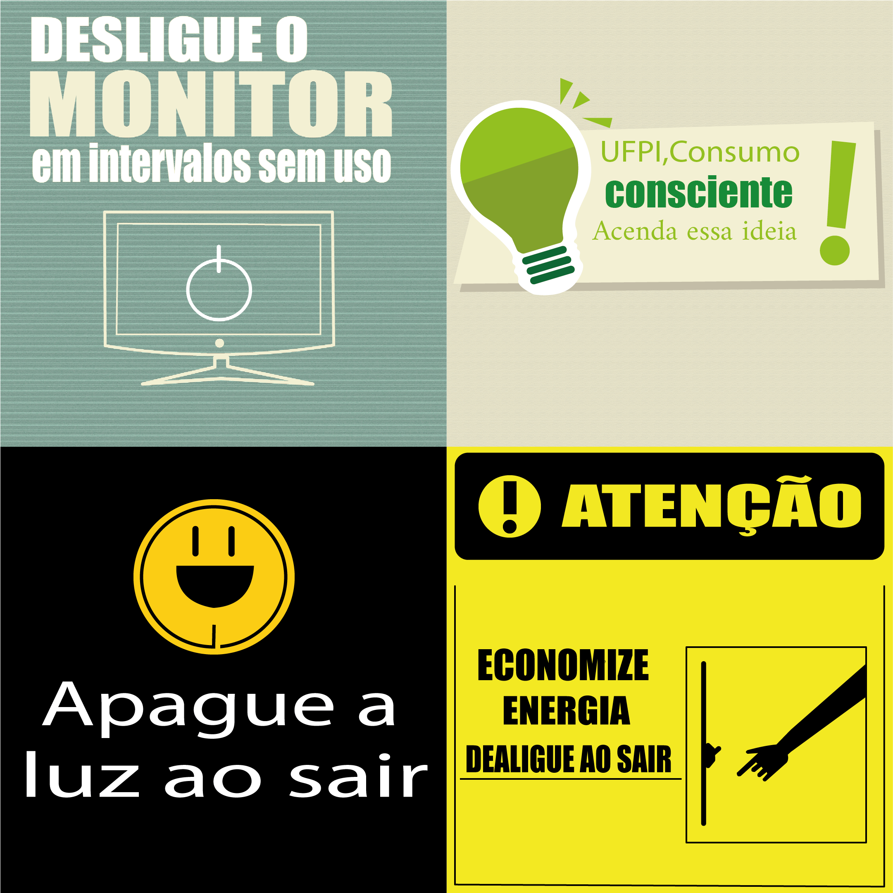

Matemática
Nesta matéria, devemos verificar em nossa residência, através do manual ou ficha técnica do produto na internet, ou nos próprios equipamentos (de maneira segura e com a supervisão dos pais ou responsáveis), a potência (em Watts) e o tempo médio de uso diário pessoal (em minutos) de cada um dos itens apresentados no quadro abaixo. Após a coleta desses dados, calcule o consumo de energia elétrica quando você utiliza esses equipamentos, preenchendo corretamente o quadro.

2- Escrever a função que representa o valor V(x) a pagar pela quantidade x de Km/h de energia elétrica
QUE SERIA:
V(x)=0,45.x
Português
Na materia de português, nos foi solicitado que fariamos um texto, com base a materia de matematica, explicanco como tinhamos feito cada calculo, falando seu resultado.
Ferramenta de desenho
Em Ferramenta de Desenho, foi solicitado que produzíssemos 4 cards com o tema da economia de energia.
